Tensorflow and Keras#
from sklearn.datasets import load_sample_images
from sklearn.datasets import load_digits
from sklearn.model_selection import train_test_split, cross_val_score
from sklearn.preprocessing import OneHotEncoder
from sklearn.metrics import accuracy_score, confusion_matrix
import matplotlib.pyplot as plt
import matplotlib.image as mpimg
import numpy as np
import seaborn as sns
import os
import sys
module_path = os.path.abspath(os.path.join(os.pardir, os.pardir))
if module_path not in sys.path:
sys.path.append(module_path)
%load_ext autoreload
%autoreload 2
Agenda#
SWBAT:
use
kerasto code up a neural network model;explain dropout and early stopping as distinctive forms of regularization in neural networks;
use wrappers inside
kerasto make models that can jibe withsklearn.
Modeling#
Before we dive in, let’s remind ourselves that the basic components of good modeling practice, and even the methods themselves, are the same with Neural Nets as they are with sklearn or statsmodels.
# We can also import `keras` directly.
# import keras
Wait a second, what is that warning?
Using TensorFlow backend.

Keras is an API#
It can be layered on top of many different back-end processing systems.
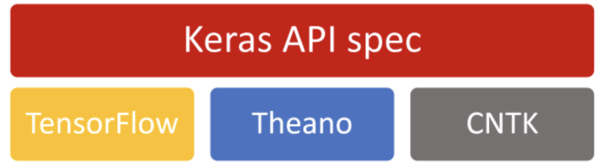
While each of these systems has its own coding methods, keras abstracts from that in the streamlined Pythonic manner we are used to seeing in other Python modeling libraries.
Keras development is backed primarily by Google, and the Keras API comes packaged in TensorFlow as tf.keras. Additionally, Microsoft maintains the CNTK Keras backend. Amazon AWS is maintaining the Keras fork with MXNet support. Other contributing companies include NVIDIA, Uber, and Apple (with CoreML).
Theano has been discontinued. The last release was 2017, but can still be used.
We will use TensorFlow, as it is the most popular. TensorFlow became the most used Keras backend, and eventually integrated Keras in via its tf.keras submodule.
from tensorflow.keras.models import Sequential
from tensorflow.keras.layers import Dense, Dropout
from tensorflow.keras.regularizers import l2
from tensorflow.keras.optimizers import SGD
from tensorflow.keras.wrappers import scikit_learn
from tensorflow.keras.callbacks import EarlyStopping
Building a Binary Classifier NN#
digits = load_digits()
X = digits.data
y = digits.target
We will start with a binary classification, and predict whether the number will be even or odd.
y_binary = y % 2
y_binary
array([0, 1, 0, ..., 0, 1, 0])
model = Sequential()
model.add(Dense(12, activation='relu', input_dim=64))
model.add(Dense(8, activation='relu'))
model.add(Dense(1, activation='sigmoid'))
model.compile(optimizer='rmsprop',
loss='binary_crossentropy',
metrics=['accuracy'])
model.fit(X, y_binary, epochs=50, batch_size=10)
Epoch 1/50
180/180 [==============================] - 1s 1ms/step - loss: 2.3532 - accuracy: 0.5391
Epoch 2/50
180/180 [==============================] - 0s 999us/step - loss: 0.4429 - accuracy: 0.7801
Epoch 3/50
180/180 [==============================] - 0s 991us/step - loss: 0.3397 - accuracy: 0.8462
Epoch 4/50
180/180 [==============================] - 0s 1ms/step - loss: 0.2341 - accuracy: 0.8960
Epoch 5/50
180/180 [==============================] - 0s 971us/step - loss: 0.1948 - accuracy: 0.9248
Epoch 6/50
180/180 [==============================] - 0s 797us/step - loss: 0.1798 - accuracy: 0.9209
Epoch 7/50
180/180 [==============================] - 0s 888us/step - loss: 0.1380 - accuracy: 0.9445
Epoch 8/50
180/180 [==============================] - 0s 864us/step - loss: 0.1515 - accuracy: 0.9328
Epoch 9/50
180/180 [==============================] - 0s 894us/step - loss: 0.1057 - accuracy: 0.9482
Epoch 10/50
180/180 [==============================] - 0s 822us/step - loss: 0.1017 - accuracy: 0.9580
Epoch 11/50
180/180 [==============================] - 0s 790us/step - loss: 0.0853 - accuracy: 0.9647
Epoch 12/50
180/180 [==============================] - 0s 806us/step - loss: 0.0808 - accuracy: 0.9690
Epoch 13/50
180/180 [==============================] - 0s 811us/step - loss: 0.0703 - accuracy: 0.9726
Epoch 14/50
180/180 [==============================] - 0s 816us/step - loss: 0.0745 - accuracy: 0.9700
Epoch 15/50
180/180 [==============================] - 0s 878us/step - loss: 0.0862 - accuracy: 0.9629
Epoch 16/50
180/180 [==============================] - 0s 832us/step - loss: 0.0683 - accuracy: 0.9745
Epoch 17/50
180/180 [==============================] - 0s 776us/step - loss: 0.0567 - accuracy: 0.9797
Epoch 18/50
180/180 [==============================] - 0s 730us/step - loss: 0.0594 - accuracy: 0.9750
Epoch 19/50
180/180 [==============================] - 0s 735us/step - loss: 0.0638 - accuracy: 0.9711
Epoch 20/50
180/180 [==============================] - 0s 701us/step - loss: 0.0517 - accuracy: 0.9792
Epoch 21/50
180/180 [==============================] - 0s 693us/step - loss: 0.0529 - accuracy: 0.9835
Epoch 22/50
180/180 [==============================] - 0s 777us/step - loss: 0.0486 - accuracy: 0.9809
Epoch 23/50
180/180 [==============================] - 0s 956us/step - loss: 0.0465 - accuracy: 0.9820
Epoch 24/50
180/180 [==============================] - 0s 748us/step - loss: 0.0491 - accuracy: 0.9774
Epoch 25/50
180/180 [==============================] - 0s 705us/step - loss: 0.0501 - accuracy: 0.9797
Epoch 26/50
180/180 [==============================] - 0s 901us/step - loss: 0.0475 - accuracy: 0.9805
Epoch 27/50
180/180 [==============================] - 0s 805us/step - loss: 0.0374 - accuracy: 0.9849
Epoch 28/50
180/180 [==============================] - 0s 968us/step - loss: 0.0358 - accuracy: 0.9887
Epoch 29/50
180/180 [==============================] - 0s 857us/step - loss: 0.0364 - accuracy: 0.9866
Epoch 30/50
180/180 [==============================] - 0s 719us/step - loss: 0.0373 - accuracy: 0.9849
Epoch 31/50
180/180 [==============================] - 0s 934us/step - loss: 0.0312 - accuracy: 0.9903
Epoch 32/50
180/180 [==============================] - 0s 1ms/step - loss: 0.0283 - accuracy: 0.9878
Epoch 33/50
180/180 [==============================] - 0s 966us/step - loss: 0.0311 - accuracy: 0.9890
Epoch 34/50
180/180 [==============================] - 0s 988us/step - loss: 0.0304 - accuracy: 0.9919
Epoch 35/50
180/180 [==============================] - 0s 1ms/step - loss: 0.0203 - accuracy: 0.9935
Epoch 36/50
180/180 [==============================] - 0s 1ms/step - loss: 0.0273 - accuracy: 0.9889
Epoch 37/50
180/180 [==============================] - 0s 688us/step - loss: 0.0190 - accuracy: 0.9930
Epoch 38/50
180/180 [==============================] - 0s 603us/step - loss: 0.0179 - accuracy: 0.9927
Epoch 39/50
180/180 [==============================] - 0s 671us/step - loss: 0.0155 - accuracy: 0.9970
Epoch 40/50
180/180 [==============================] - 0s 673us/step - loss: 0.0140 - accuracy: 0.9962
Epoch 41/50
180/180 [==============================] - 0s 724us/step - loss: 0.0152 - accuracy: 0.9957
Epoch 42/50
180/180 [==============================] - 0s 734us/step - loss: 0.0146 - accuracy: 0.9957
Epoch 43/50
180/180 [==============================] - 0s 920us/step - loss: 0.0112 - accuracy: 0.9974
Epoch 44/50
180/180 [==============================] - 0s 878us/step - loss: 0.0145 - accuracy: 0.9939
Epoch 45/50
180/180 [==============================] - 0s 970us/step - loss: 0.0088 - accuracy: 0.9964
Epoch 46/50
180/180 [==============================] - 0s 864us/step - loss: 0.0162 - accuracy: 0.9949
Epoch 47/50
180/180 [==============================] - 0s 902us/step - loss: 0.0165 - accuracy: 0.9927
Epoch 48/50
180/180 [==============================] - 0s 955us/step - loss: 0.0092 - accuracy: 0.9962
Epoch 49/50
180/180 [==============================] - 0s 915us/step - loss: 0.0102 - accuracy: 0.9966
Epoch 50/50
180/180 [==============================] - 0s 913us/step - loss: 0.0080 - accuracy: 0.9980
<tensorflow.python.keras.callbacks.History at 0x7fea1f2641f0>
Things to know:#
The data and labels in
fit()need to be numpy arrays, notpandasdfs.Scaling your data will have a large impact on your model.
For our traditional input features, we would use a scaler object. For images, as long as the minimum value is 0, we can simply divide through by the maximum pixel intensity.
Getting data ready for modeling#
Preprocessing:
use train_test_split to create X_train, y_train, X_test, and y_test
Split training data into pure_train and validation sets.
Scale the pixel intensity to a value between 0 and 1.
Scaling our input variables will help speed up our neural network.
Since our minimum intensity is 0, we can normalize the inputs by dividing each value by the max value (16).
X_train, X_test, y_train, y_test =\
train_test_split(X, y_binary, random_state=42, test_size=0.2)
X_pure_train, X_val, y_pure_train, y_val =\
train_test_split(X_train, y_train, random_state=42, test_size=0.2)
X_pure_train, X_val, X_test = X_pure_train/16, X_val/16, X_test/16
For activation, let’s start with the familiar sigmoid function, and see how it performs.
model = Sequential()
# We will start with our trusty sigmoid function.
# What does input dimension correspond to?
model.add(Dense(12, activation='sigmoid', input_dim=64))
model.add(Dense(8, activation='sigmoid'))
model.add(Dense(1, activation='sigmoid'))
model.compile(optimizer='SGD' ,
# We use binary_crossentropy for a binary loss function
loss='binary_crossentropy',
metrics=['accuracy'])
# Assign the variable history to store the results,
# and set verbose=1 so we can see the output. To see
# only the epoch count, set verbose=2.
results = model.fit(X_pure_train, y_pure_train, epochs=10, batch_size=100, verbose=1)
Epoch 1/10
12/12 [==============================] - 0s 1ms/step - loss: 0.7227 - accuracy: 0.5010
Epoch 2/10
12/12 [==============================] - 0s 1ms/step - loss: 0.7251 - accuracy: 0.4837
Epoch 3/10
12/12 [==============================] - 0s 1ms/step - loss: 0.7173 - accuracy: 0.4882
Epoch 4/10
12/12 [==============================] - 0s 1ms/step - loss: 0.7145 - accuracy: 0.4851
Epoch 5/10
12/12 [==============================] - 0s 1ms/step - loss: 0.7077 - accuracy: 0.4938
Epoch 6/10
12/12 [==============================] - 0s 1ms/step - loss: 0.6977 - accuracy: 0.5170
Epoch 7/10
12/12 [==============================] - 0s 1ms/step - loss: 0.6984 - accuracy: 0.5087
Epoch 8/10
12/12 [==============================] - 0s 1ms/step - loss: 0.7024 - accuracy: 0.4851
Epoch 9/10
12/12 [==============================] - 0s 1ms/step - loss: 0.6969 - accuracy: 0.5020
Epoch 10/10
12/12 [==============================] - 0s 1ms/step - loss: 0.6937 - accuracy: 0.5101
We can access the history of our model via results.history.
Use dict to take a tour.
results.__dict__
{'validation_data': None,
'model': <tensorflow.python.keras.engine.sequential.Sequential at 0x7fe9fffe2880>,
'_chief_worker_only': None,
'_supports_tf_logs': False,
'history': {'loss': [0.7198230028152466,
0.7145865559577942,
0.7102043628692627,
0.7067216038703918,
0.7036917209625244,
0.7011711001396179,
0.6991418600082397,
0.6975697875022888,
0.6962380409240723,
0.695183515548706],
'accuracy': [0.5039164423942566,
0.5039164423942566,
0.5039164423942566,
0.5039164423942566,
0.5039164423942566,
0.5039164423942566,
0.5039164423942566,
0.5039164423942566,
0.5039164423942566,
0.5039164423942566]},
'params': {'verbose': 1, 'epochs': 10, 'steps': 12},
'epoch': [0, 1, 2, 3, 4, 5, 6, 7, 8, 9]}
sigmoid_loss = results.history['loss']
sigmoid_accuracy = results.history['accuracy']
fig, (ax1, ax2) = plt.subplots(1, 2, figsize=(10, 5))
sns.lineplot(results.epoch, results.history['loss'], ax=ax1, label='loss')
sns.lineplot(results.epoch, results.history['accuracy'], ax=ax2, label='accuracy');
/opt/anaconda3/envs/learn-env-new/lib/python3.8/site-packages/seaborn/_decorators.py:36: FutureWarning: Pass the following variables as keyword args: x, y. From version 0.12, the only valid positional argument will be `data`, and passing other arguments without an explicit keyword will result in an error or misinterpretation.
warnings.warn(
/opt/anaconda3/envs/learn-env-new/lib/python3.8/site-packages/seaborn/_decorators.py:36: FutureWarning: Pass the following variables as keyword args: x, y. From version 0.12, the only valid positional argument will be `data`, and passing other arguments without an explicit keyword will result in an error or misinterpretation.
warnings.warn(
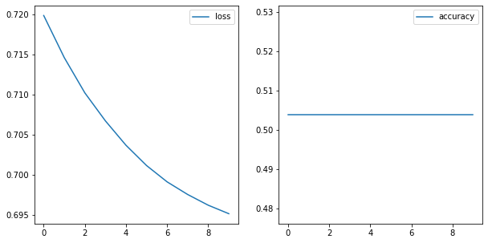
We have two plots above both relating to the quality fo our model. The left-hand plot is our loss. It uses the probabilities associated with our predictions to judge how well our prediction fits reality. We want it to decrease as far as possible.
The accuracy judges how well the predictions are after applying the threshold at the output layer. We want accuracy to increase.
If we look at our loss, it is still decreasing. That is a signal that our model is still learning. If our model is still learning, we can allow it to get better by turning a few dials.
Let’s:
increase the number of epochs;
change sigmoid activation in the hidden layers to ReLU;
decrease the batch size; and
try an ‘adam’ optimizer instead of ‘SGD’.
model = Sequential()
model.add(Dense(12, activation='relu', input_dim=64))
model.add(Dense(8, activation='relu'))
model.add(Dense(1, activation='sigmoid'))
model.compile(optimizer='adam',
loss='binary_crossentropy',
metrics=['accuracy'])
# Assign the variable history to store the results,
# and set verbose=1 so we can see the output.
results = model.fit(X_pure_train, y_pure_train, epochs=100, batch_size=32, verbose=1)
Epoch 1/100
36/36 [==============================] - 0s 990us/step - loss: 0.6947 - accuracy: 0.5564
Epoch 2/100
36/36 [==============================] - 0s 1ms/step - loss: 0.6275 - accuracy: 0.8134
Epoch 3/100
36/36 [==============================] - 0s 991us/step - loss: 0.5573 - accuracy: 0.8586
Epoch 4/100
36/36 [==============================] - 0s 912us/step - loss: 0.4626 - accuracy: 0.8752
Epoch 5/100
36/36 [==============================] - 0s 932us/step - loss: 0.3742 - accuracy: 0.8701
Epoch 6/100
36/36 [==============================] - 0s 961us/step - loss: 0.3198 - accuracy: 0.8900
Epoch 7/100
36/36 [==============================] - 0s 1ms/step - loss: 0.2802 - accuracy: 0.9038
Epoch 8/100
36/36 [==============================] - 0s 822us/step - loss: 0.2655 - accuracy: 0.8924
Epoch 9/100
36/36 [==============================] - 0s 722us/step - loss: 0.2685 - accuracy: 0.8832
Epoch 10/100
36/36 [==============================] - 0s 903us/step - loss: 0.2484 - accuracy: 0.8912
Epoch 11/100
36/36 [==============================] - 0s 680us/step - loss: 0.2201 - accuracy: 0.9050
Epoch 12/100
36/36 [==============================] - 0s 655us/step - loss: 0.1969 - accuracy: 0.9213
Epoch 13/100
36/36 [==============================] - 0s 610us/step - loss: 0.1838 - accuracy: 0.9169
Epoch 14/100
36/36 [==============================] - 0s 756us/step - loss: 0.2003 - accuracy: 0.9099
Epoch 15/100
36/36 [==============================] - 0s 796us/step - loss: 0.1633 - accuracy: 0.9299
Epoch 16/100
36/36 [==============================] - 0s 766us/step - loss: 0.1784 - accuracy: 0.9145
Epoch 17/100
36/36 [==============================] - 0s 869us/step - loss: 0.1550 - accuracy: 0.9323
Epoch 18/100
36/36 [==============================] - 0s 832us/step - loss: 0.1515 - accuracy: 0.9254
Epoch 19/100
36/36 [==============================] - 0s 861us/step - loss: 0.1464 - accuracy: 0.9378
Epoch 20/100
36/36 [==============================] - 0s 1ms/step - loss: 0.1507 - accuracy: 0.9345
Epoch 21/100
36/36 [==============================] - 0s 1ms/step - loss: 0.1235 - accuracy: 0.9456
Epoch 22/100
36/36 [==============================] - 0s 1ms/step - loss: 0.1303 - accuracy: 0.9470
Epoch 23/100
36/36 [==============================] - 0s 1ms/step - loss: 0.1142 - accuracy: 0.9523
Epoch 24/100
36/36 [==============================] - 0s 1ms/step - loss: 0.1102 - accuracy: 0.9528
Epoch 25/100
36/36 [==============================] - 0s 1ms/step - loss: 0.1173 - accuracy: 0.9477
Epoch 26/100
36/36 [==============================] - 0s 986us/step - loss: 0.1079 - accuracy: 0.9553
Epoch 27/100
36/36 [==============================] - 0s 888us/step - loss: 0.1060 - accuracy: 0.9475
Epoch 28/100
36/36 [==============================] - 0s 914us/step - loss: 0.1054 - accuracy: 0.9567
Epoch 29/100
36/36 [==============================] - 0s 884us/step - loss: 0.0913 - accuracy: 0.9622
Epoch 30/100
36/36 [==============================] - 0s 905us/step - loss: 0.0987 - accuracy: 0.9599
Epoch 31/100
36/36 [==============================] - 0s 817us/step - loss: 0.0991 - accuracy: 0.9606
Epoch 32/100
36/36 [==============================] - 0s 703us/step - loss: 0.0798 - accuracy: 0.9718
Epoch 33/100
36/36 [==============================] - 0s 634us/step - loss: 0.0868 - accuracy: 0.9698
Epoch 34/100
36/36 [==============================] - 0s 667us/step - loss: 0.0859 - accuracy: 0.9604
Epoch 35/100
36/36 [==============================] - 0s 679us/step - loss: 0.0767 - accuracy: 0.9753
Epoch 36/100
36/36 [==============================] - 0s 713us/step - loss: 0.0838 - accuracy: 0.9602
Epoch 37/100
36/36 [==============================] - 0s 752us/step - loss: 0.0775 - accuracy: 0.9681
Epoch 38/100
36/36 [==============================] - 0s 836us/step - loss: 0.0655 - accuracy: 0.9777
Epoch 39/100
36/36 [==============================] - 0s 1ms/step - loss: 0.0656 - accuracy: 0.9800
Epoch 40/100
36/36 [==============================] - 0s 985us/step - loss: 0.0690 - accuracy: 0.9743
Epoch 41/100
36/36 [==============================] - 0s 939us/step - loss: 0.0675 - accuracy: 0.9753
Epoch 42/100
36/36 [==============================] - 0s 1ms/step - loss: 0.0653 - accuracy: 0.9730
Epoch 43/100
36/36 [==============================] - 0s 823us/step - loss: 0.0673 - accuracy: 0.9761
Epoch 44/100
36/36 [==============================] - 0s 782us/step - loss: 0.0507 - accuracy: 0.9849
Epoch 45/100
36/36 [==============================] - 0s 916us/step - loss: 0.0617 - accuracy: 0.9752
Epoch 46/100
36/36 [==============================] - 0s 718us/step - loss: 0.0483 - accuracy: 0.9847
Epoch 47/100
36/36 [==============================] - 0s 703us/step - loss: 0.0533 - accuracy: 0.9806
Epoch 48/100
36/36 [==============================] - 0s 662us/step - loss: 0.0501 - accuracy: 0.9808
Epoch 49/100
36/36 [==============================] - 0s 715us/step - loss: 0.0427 - accuracy: 0.9868
Epoch 50/100
36/36 [==============================] - 0s 785us/step - loss: 0.0379 - accuracy: 0.9915
Epoch 51/100
36/36 [==============================] - 0s 746us/step - loss: 0.0454 - accuracy: 0.9906
Epoch 52/100
36/36 [==============================] - 0s 723us/step - loss: 0.0371 - accuracy: 0.9883
Epoch 53/100
36/36 [==============================] - 0s 1ms/step - loss: 0.0448 - accuracy: 0.9830
Epoch 54/100
36/36 [==============================] - 0s 1ms/step - loss: 0.0373 - accuracy: 0.9906
Epoch 55/100
36/36 [==============================] - 0s 1ms/step - loss: 0.0388 - accuracy: 0.9839
Epoch 56/100
36/36 [==============================] - 0s 1ms/step - loss: 0.0356 - accuracy: 0.9927
Epoch 57/100
36/36 [==============================] - 0s 915us/step - loss: 0.0458 - accuracy: 0.9831
Epoch 58/100
36/36 [==============================] - 0s 901us/step - loss: 0.0305 - accuracy: 0.9916
Epoch 59/100
36/36 [==============================] - 0s 890us/step - loss: 0.0326 - accuracy: 0.9937
Epoch 60/100
36/36 [==============================] - 0s 871us/step - loss: 0.0355 - accuracy: 0.9901
Epoch 61/100
36/36 [==============================] - 0s 852us/step - loss: 0.0279 - accuracy: 0.9932
Epoch 62/100
36/36 [==============================] - 0s 867us/step - loss: 0.0274 - accuracy: 0.9952
Epoch 63/100
36/36 [==============================] - 0s 1ms/step - loss: 0.0302 - accuracy: 0.9944
Epoch 64/100
36/36 [==============================] - 0s 2ms/step - loss: 0.0255 - accuracy: 0.9939
Epoch 65/100
36/36 [==============================] - 0s 1ms/step - loss: 0.0285 - accuracy: 0.9935
Epoch 66/100
36/36 [==============================] - 0s 839us/step - loss: 0.0261 - accuracy: 0.9945
Epoch 67/100
36/36 [==============================] - 0s 755us/step - loss: 0.0221 - accuracy: 0.9979
Epoch 68/100
36/36 [==============================] - 0s 717us/step - loss: 0.0250 - accuracy: 0.9969
Epoch 69/100
36/36 [==============================] - 0s 894us/step - loss: 0.0262 - accuracy: 0.9970
Epoch 70/100
36/36 [==============================] - 0s 679us/step - loss: 0.0271 - accuracy: 0.9928
Epoch 71/100
36/36 [==============================] - 0s 712us/step - loss: 0.0227 - accuracy: 0.9994
Epoch 72/100
36/36 [==============================] - 0s 870us/step - loss: 0.0244 - accuracy: 0.9949
Epoch 73/100
36/36 [==============================] - 0s 920us/step - loss: 0.0205 - accuracy: 0.9970
Epoch 74/100
36/36 [==============================] - 0s 876us/step - loss: 0.0191 - accuracy: 0.9959
Epoch 75/100
36/36 [==============================] - 0s 681us/step - loss: 0.0219 - accuracy: 0.9983
Epoch 76/100
36/36 [==============================] - 0s 727us/step - loss: 0.0175 - accuracy: 0.9985
Epoch 77/100
36/36 [==============================] - 0s 904us/step - loss: 0.0157 - accuracy: 0.9980
Epoch 78/100
36/36 [==============================] - 0s 831us/step - loss: 0.0168 - accuracy: 0.9977
Epoch 79/100
36/36 [==============================] - 0s 908us/step - loss: 0.0156 - accuracy: 0.9991
Epoch 80/100
36/36 [==============================] - 0s 862us/step - loss: 0.0142 - accuracy: 0.9978
Epoch 81/100
36/36 [==============================] - 0s 803us/step - loss: 0.0176 - accuracy: 0.9979
Epoch 82/100
36/36 [==============================] - 0s 694us/step - loss: 0.0153 - accuracy: 0.9985
Epoch 83/100
36/36 [==============================] - 0s 600us/step - loss: 0.0164 - accuracy: 0.9991
Epoch 84/100
36/36 [==============================] - 0s 651us/step - loss: 0.0167 - accuracy: 0.9994
Epoch 85/100
36/36 [==============================] - 0s 648us/step - loss: 0.0137 - accuracy: 0.9987
Epoch 86/100
36/36 [==============================] - 0s 712us/step - loss: 0.0127 - accuracy: 0.9992
Epoch 87/100
36/36 [==============================] - 0s 743us/step - loss: 0.0135 - accuracy: 0.9991
Epoch 88/100
36/36 [==============================] - 0s 695us/step - loss: 0.0125 - accuracy: 0.9992
Epoch 89/100
36/36 [==============================] - 0s 724us/step - loss: 0.0143 - accuracy: 0.9986
Epoch 90/100
36/36 [==============================] - 0s 720us/step - loss: 0.0122 - accuracy: 0.9982
Epoch 91/100
36/36 [==============================] - 0s 773us/step - loss: 0.0116 - accuracy: 0.9998
Epoch 92/100
36/36 [==============================] - 0s 709us/step - loss: 0.0124 - accuracy: 0.9990
Epoch 93/100
36/36 [==============================] - 0s 633us/step - loss: 0.0142 - accuracy: 0.9993
Epoch 94/100
36/36 [==============================] - 0s 717us/step - loss: 0.0115 - accuracy: 0.9985
Epoch 95/100
36/36 [==============================] - 0s 655us/step - loss: 0.0095 - accuracy: 1.0000
Epoch 96/100
36/36 [==============================] - 0s 630us/step - loss: 0.0104 - accuracy: 0.9996
Epoch 97/100
36/36 [==============================] - 0s 745us/step - loss: 0.0082 - accuracy: 0.9996
Epoch 98/100
36/36 [==============================] - 0s 611us/step - loss: 0.0104 - accuracy: 0.9999
Epoch 99/100
36/36 [==============================] - 0s 658us/step - loss: 0.0099 - accuracy: 1.0000
Epoch 100/100
36/36 [==============================] - 0s 648us/step - loss: 0.0093 - accuracy: 1.0000
sigmoid_loss = results.history['loss']
sigmoid_accuracy = results.history['accuracy']
fig, (ax1, ax2) = plt.subplots(1,2, figsize=(10,5))
sns.lineplot(results.epoch, sigmoid_loss, ax=ax1, label='loss')
sns.lineplot(results.epoch, sigmoid_accuracy, ax=ax2, label='accuracy');
/opt/anaconda3/envs/learn-env-new/lib/python3.8/site-packages/seaborn/_decorators.py:36: FutureWarning: Pass the following variables as keyword args: x, y. From version 0.12, the only valid positional argument will be `data`, and passing other arguments without an explicit keyword will result in an error or misinterpretation.
warnings.warn(
/opt/anaconda3/envs/learn-env-new/lib/python3.8/site-packages/seaborn/_decorators.py:36: FutureWarning: Pass the following variables as keyword args: x, y. From version 0.12, the only valid positional argument will be `data`, and passing other arguments without an explicit keyword will result in an error or misinterpretation.
warnings.warn(
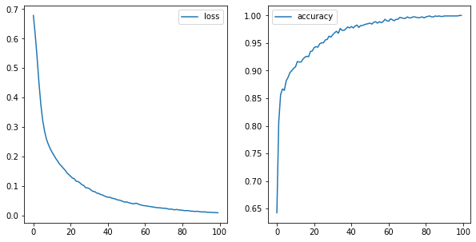
If we increase the learning rate to a very high number, we see that our model overshoots the minimum, and starts bouncing all around.
model = Sequential()
sgd = SGD(lr=9)
model.add(Dense(12, activation='relu', input_dim=64))
model.add(Dense(8, activation='relu'))
model.add(Dense(1, activation='sigmoid'))
model.compile(optimizer=sgd,
loss='binary_crossentropy',
metrics=['accuracy'])
results = model.fit(X_pure_train, y_pure_train,
epochs=30, batch_size=10, verbose=1)
relu_loss = results.history['loss']
relu_accuracy = results.history['accuracy']
fig, (ax1, ax2) = plt.subplots(1,2, figsize=(10,5))
sns.lineplot(results.epoch, relu_loss, ax=ax1, label='loss')
sns.lineplot(results.epoch, relu_accuracy, ax=ax2, label='accuracy');
Epoch 1/30
115/115 [==============================] - 0s 649us/step - loss: 342.6265 - accuracy: 0.4689
Epoch 2/30
115/115 [==============================] - 0s 633us/step - loss: 0.9633 - accuracy: 0.4875
Epoch 3/30
115/115 [==============================] - 0s 682us/step - loss: 1.0653 - accuracy: 0.4862
Epoch 4/30
115/115 [==============================] - 0s 798us/step - loss: 1.0428 - accuracy: 0.4858
Epoch 5/30
115/115 [==============================] - 0s 647us/step - loss: 0.9439 - accuracy: 0.5136
Epoch 6/30
115/115 [==============================] - 0s 660us/step - loss: 1.0574 - accuracy: 0.4760
Epoch 7/30
115/115 [==============================] - 0s 574us/step - loss: 1.0234 - accuracy: 0.5245
Epoch 8/30
115/115 [==============================] - 0s 589us/step - loss: 1.0812 - accuracy: 0.4768
Epoch 9/30
115/115 [==============================] - 0s 575us/step - loss: 0.9818 - accuracy: 0.5072
Epoch 10/30
115/115 [==============================] - 0s 579us/step - loss: 1.0777 - accuracy: 0.4775
Epoch 11/30
115/115 [==============================] - 0s 602us/step - loss: 0.9390 - accuracy: 0.5008
Epoch 12/30
115/115 [==============================] - 0s 591us/step - loss: 1.1070 - accuracy: 0.4766
Epoch 13/30
115/115 [==============================] - 0s 613us/step - loss: 0.9476 - accuracy: 0.5044
Epoch 14/30
115/115 [==============================] - 0s 576us/step - loss: 0.9183 - accuracy: 0.5392
Epoch 15/30
115/115 [==============================] - 0s 577us/step - loss: 0.9458 - accuracy: 0.5008
Epoch 16/30
115/115 [==============================] - 0s 577us/step - loss: 0.9881 - accuracy: 0.5145
Epoch 17/30
115/115 [==============================] - 0s 666us/step - loss: 0.9813 - accuracy: 0.4825
Epoch 18/30
115/115 [==============================] - 0s 614us/step - loss: 0.9301 - accuracy: 0.5191
Epoch 19/30
115/115 [==============================] - 0s 611us/step - loss: 1.0463 - accuracy: 0.4786
Epoch 20/30
115/115 [==============================] - 0s 655us/step - loss: 0.9899 - accuracy: 0.4836
Epoch 21/30
115/115 [==============================] - 0s 583us/step - loss: 1.1203 - accuracy: 0.4559
Epoch 22/30
115/115 [==============================] - 0s 664us/step - loss: 1.1258 - accuracy: 0.4968
Epoch 23/30
115/115 [==============================] - 0s 587us/step - loss: 1.0303 - accuracy: 0.4805
Epoch 24/30
115/115 [==============================] - 0s 642us/step - loss: 0.9564 - accuracy: 0.5118
Epoch 25/30
115/115 [==============================] - 0s 673us/step - loss: 0.9892 - accuracy: 0.5138
Epoch 26/30
115/115 [==============================] - 0s 643us/step - loss: 1.0624 - accuracy: 0.4833
Epoch 27/30
115/115 [==============================] - 0s 668us/step - loss: 0.9852 - accuracy: 0.5038
Epoch 28/30
115/115 [==============================] - 0s 627us/step - loss: 1.0583 - accuracy: 0.4946
Epoch 29/30
115/115 [==============================] - 0s 593us/step - loss: 0.9765 - accuracy: 0.5004
Epoch 30/30
115/115 [==============================] - 0s 678us/step - loss: 1.0646 - accuracy: 0.5017
/opt/anaconda3/envs/learn-env-new/lib/python3.8/site-packages/seaborn/_decorators.py:36: FutureWarning: Pass the following variables as keyword args: x, y. From version 0.12, the only valid positional argument will be `data`, and passing other arguments without an explicit keyword will result in an error or misinterpretation.
warnings.warn(
/opt/anaconda3/envs/learn-env-new/lib/python3.8/site-packages/seaborn/_decorators.py:36: FutureWarning: Pass the following variables as keyword args: x, y. From version 0.12, the only valid positional argument will be `data`, and passing other arguments without an explicit keyword will result in an error or misinterpretation.
warnings.warn(
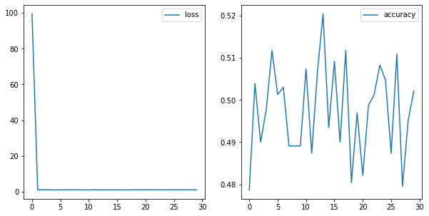
We have been looking only at our training set. Let’s add in our validation set to the picture.
model = Sequential()
model.add(Dense(12, activation='relu', input_dim=64))
model.add(Dense(8, activation='relu'))
model.add(Dense(4, activation='relu'))
model.add(Dense(1, activation='sigmoid'))
model.compile(optimizer='adam',
loss='binary_crossentropy',
metrics=['accuracy'])
results = model.fit(X_pure_train, y_pure_train,
epochs=100, batch_size=32, verbose=0,
validation_data=(X_val, y_val))
train_loss = results.history['loss']
train_acc = results.history['accuracy']
val_loss = results.history['val_loss']
val_acc = results.history['val_accuracy']
fig, (ax1, ax2) = plt.subplots(1, 2, figsize=(10, 5))
sns.lineplot(results.epoch, train_loss, ax=ax1, label='train_loss')
sns.lineplot(results.epoch, train_acc, ax=ax2, label='train_accuracy')
sns.lineplot(results.epoch, val_loss, ax=ax1, label='val_loss')
sns.lineplot(results.epoch, val_acc, ax=ax2, label='val_accuracy');
/opt/anaconda3/envs/learn-env-new/lib/python3.8/site-packages/seaborn/_decorators.py:36: FutureWarning: Pass the following variables as keyword args: x, y. From version 0.12, the only valid positional argument will be `data`, and passing other arguments without an explicit keyword will result in an error or misinterpretation.
warnings.warn(
/opt/anaconda3/envs/learn-env-new/lib/python3.8/site-packages/seaborn/_decorators.py:36: FutureWarning: Pass the following variables as keyword args: x, y. From version 0.12, the only valid positional argument will be `data`, and passing other arguments without an explicit keyword will result in an error or misinterpretation.
warnings.warn(
/opt/anaconda3/envs/learn-env-new/lib/python3.8/site-packages/seaborn/_decorators.py:36: FutureWarning: Pass the following variables as keyword args: x, y. From version 0.12, the only valid positional argument will be `data`, and passing other arguments without an explicit keyword will result in an error or misinterpretation.
warnings.warn(
/opt/anaconda3/envs/learn-env-new/lib/python3.8/site-packages/seaborn/_decorators.py:36: FutureWarning: Pass the following variables as keyword args: x, y. From version 0.12, the only valid positional argument will be `data`, and passing other arguments without an explicit keyword will result in an error or misinterpretation.
warnings.warn(
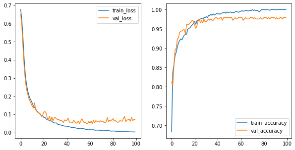
results.history['val_accuracy'][-1]
0.9791666865348816
Connecting with sklearn#
The keras.wrappers submodule means that we can turn keras models into estimators that sklearn tools will recognize.
cross_val_score(model, X_pure_train, y_pure_train)
---------------------------------------------------------------------------
TypeError Traceback (most recent call last)
<ipython-input-17-37bcc55654e8> in <module>
----> 1 cross_val_score(model, X_pure_train, y_pure_train)
/opt/anaconda3/envs/learn-env-new/lib/python3.8/site-packages/sklearn/utils/validation.py in inner_f(*args, **kwargs)
70 FutureWarning)
71 kwargs.update({k: arg for k, arg in zip(sig.parameters, args)})
---> 72 return f(**kwargs)
73 return inner_f
74
/opt/anaconda3/envs/learn-env-new/lib/python3.8/site-packages/sklearn/model_selection/_validation.py in cross_val_score(estimator, X, y, groups, scoring, cv, n_jobs, verbose, fit_params, pre_dispatch, error_score)
397 """
398 # To ensure multimetric format is not supported
--> 399 scorer = check_scoring(estimator, scoring=scoring)
400
401 cv_results = cross_validate(estimator=estimator, X=X, y=y, groups=groups,
/opt/anaconda3/envs/learn-env-new/lib/python3.8/site-packages/sklearn/utils/validation.py in inner_f(*args, **kwargs)
70 FutureWarning)
71 kwargs.update({k: arg for k, arg in zip(sig.parameters, args)})
---> 72 return f(**kwargs)
73 return inner_f
74
/opt/anaconda3/envs/learn-env-new/lib/python3.8/site-packages/sklearn/metrics/_scorer.py in check_scoring(estimator, scoring, allow_none)
423 return None
424 else:
--> 425 raise TypeError(
426 "If no scoring is specified, the estimator passed should "
427 "have a 'score' method. The estimator %r does not."
TypeError: If no scoring is specified, the estimator passed should have a 'score' method. The estimator <tensorflow.python.keras.engine.sequential.Sequential object at 0x7fea02bfb820> does not.
def build_model():
model = Sequential()
model.add(Dense(12, activation='relu', input_dim=64))
model.add(Dense(8, activation='relu'))
model.add(Dense(4, activation='relu'))
model.add(Dense(1, activation = 'sigmoid'))
model.compile(optimizer='adam',
loss='binary_crossentropy',
metrics=['accuracy'])
return model
keras_model = scikit_learn.KerasClassifier(build_model,
epochs=50,
batch_size=32,
verbose=2)
type(keras_model)
tensorflow.python.keras.wrappers.scikit_learn.KerasClassifier
cross_val_score(keras_model, X_pure_train, y_pure_train)
Epoch 1/50
29/29 - 0s - loss: 0.6694 - accuracy: 0.6148
Epoch 2/50
29/29 - 0s - loss: 0.6276 - accuracy: 0.7269
Epoch 3/50
29/29 - 0s - loss: 0.5644 - accuracy: 0.7693
Epoch 4/50
29/29 - 0s - loss: 0.4844 - accuracy: 0.8270
Epoch 5/50
29/29 - 0s - loss: 0.4120 - accuracy: 0.8553
Epoch 6/50
29/29 - 0s - loss: 0.3490 - accuracy: 0.8705
Epoch 7/50
29/29 - 0s - loss: 0.2966 - accuracy: 0.8814
Epoch 8/50
29/29 - 0s - loss: 0.2571 - accuracy: 0.9086
Epoch 9/50
29/29 - 0s - loss: 0.2287 - accuracy: 0.9162
Epoch 10/50
29/29 - 0s - loss: 0.2036 - accuracy: 0.9249
Epoch 11/50
29/29 - 0s - loss: 0.1856 - accuracy: 0.9293
Epoch 12/50
29/29 - 0s - loss: 0.1731 - accuracy: 0.9380
Epoch 13/50
29/29 - 0s - loss: 0.1609 - accuracy: 0.9412
Epoch 14/50
29/29 - 0s - loss: 0.1509 - accuracy: 0.9456
Epoch 15/50
29/29 - 0s - loss: 0.1430 - accuracy: 0.9499
Epoch 16/50
29/29 - 0s - loss: 0.1353 - accuracy: 0.9554
Epoch 17/50
29/29 - 0s - loss: 0.1264 - accuracy: 0.9532
Epoch 18/50
29/29 - 0s - loss: 0.1196 - accuracy: 0.9554
Epoch 19/50
29/29 - 0s - loss: 0.1140 - accuracy: 0.9641
Epoch 20/50
29/29 - 0s - loss: 0.1079 - accuracy: 0.9663
Epoch 21/50
29/29 - 0s - loss: 0.1038 - accuracy: 0.9641
Epoch 22/50
29/29 - 0s - loss: 0.0977 - accuracy: 0.9695
Epoch 23/50
29/29 - 0s - loss: 0.0914 - accuracy: 0.9695
Epoch 24/50
29/29 - 0s - loss: 0.0890 - accuracy: 0.9750
Epoch 25/50
29/29 - 0s - loss: 0.0829 - accuracy: 0.9706
Epoch 26/50
29/29 - 0s - loss: 0.0819 - accuracy: 0.9750
Epoch 27/50
29/29 - 0s - loss: 0.0772 - accuracy: 0.9782
Epoch 28/50
29/29 - 0s - loss: 0.0731 - accuracy: 0.9761
Epoch 29/50
29/29 - 0s - loss: 0.0706 - accuracy: 0.9750
Epoch 30/50
29/29 - 0s - loss: 0.0655 - accuracy: 0.9815
Epoch 31/50
29/29 - 0s - loss: 0.0629 - accuracy: 0.9815
Epoch 32/50
29/29 - 0s - loss: 0.0594 - accuracy: 0.9826
Epoch 33/50
29/29 - 0s - loss: 0.0603 - accuracy: 0.9815
Epoch 34/50
29/29 - 0s - loss: 0.0580 - accuracy: 0.9815
Epoch 35/50
29/29 - 0s - loss: 0.0538 - accuracy: 0.9848
Epoch 36/50
29/29 - 0s - loss: 0.0512 - accuracy: 0.9859
Epoch 37/50
29/29 - 0s - loss: 0.0489 - accuracy: 0.9859
Epoch 38/50
29/29 - 0s - loss: 0.0491 - accuracy: 0.9859
Epoch 39/50
29/29 - 0s - loss: 0.0483 - accuracy: 0.9837
Epoch 40/50
29/29 - 0s - loss: 0.0463 - accuracy: 0.9869
Epoch 41/50
29/29 - 0s - loss: 0.0433 - accuracy: 0.9891
Epoch 42/50
29/29 - 0s - loss: 0.0408 - accuracy: 0.9869
Epoch 43/50
29/29 - 0s - loss: 0.0424 - accuracy: 0.9859
Epoch 44/50
29/29 - 0s - loss: 0.0382 - accuracy: 0.9902
Epoch 45/50
29/29 - 0s - loss: 0.0381 - accuracy: 0.9880
Epoch 46/50
29/29 - 0s - loss: 0.0345 - accuracy: 0.9902
Epoch 47/50
29/29 - 0s - loss: 0.0332 - accuracy: 0.9924
Epoch 48/50
29/29 - 0s - loss: 0.0334 - accuracy: 0.9891
Epoch 49/50
29/29 - 0s - loss: 0.0304 - accuracy: 0.9880
Epoch 50/50
29/29 - 0s - loss: 0.0313 - accuracy: 0.9880
8/8 - 0s - loss: 0.1297 - accuracy: 0.9609
Epoch 1/50
29/29 - 0s - loss: 0.7011 - accuracy: 0.5321
Epoch 2/50
29/29 - 0s - loss: 0.6647 - accuracy: 0.6355
Epoch 3/50
29/29 - 0s - loss: 0.6233 - accuracy: 0.6986
Epoch 4/50
29/29 - 0s - loss: 0.5691 - accuracy: 0.7563
Epoch 5/50
29/29 - 0s - loss: 0.5197 - accuracy: 0.8205
Epoch 6/50
29/29 - 0s - loss: 0.4685 - accuracy: 0.8585
Epoch 7/50
29/29 - 0s - loss: 0.4138 - accuracy: 0.8912
Epoch 8/50
29/29 - 0s - loss: 0.3533 - accuracy: 0.9021
Epoch 9/50
29/29 - 0s - loss: 0.2972 - accuracy: 0.9129
Epoch 10/50
29/29 - 0s - loss: 0.2498 - accuracy: 0.9217
Epoch 11/50
29/29 - 0s - loss: 0.2144 - accuracy: 0.9304
Epoch 12/50
29/29 - 0s - loss: 0.1882 - accuracy: 0.9391
Epoch 13/50
29/29 - 0s - loss: 0.1697 - accuracy: 0.9445
Epoch 14/50
29/29 - 0s - loss: 0.1559 - accuracy: 0.9499
Epoch 15/50
29/29 - 0s - loss: 0.1497 - accuracy: 0.9499
Epoch 16/50
29/29 - 0s - loss: 0.1356 - accuracy: 0.9587
Epoch 17/50
29/29 - 0s - loss: 0.1275 - accuracy: 0.9597
Epoch 18/50
29/29 - 0s - loss: 0.1199 - accuracy: 0.9597
Epoch 19/50
29/29 - 0s - loss: 0.1125 - accuracy: 0.9641
Epoch 20/50
29/29 - 0s - loss: 0.1073 - accuracy: 0.9663
Epoch 21/50
29/29 - 0s - loss: 0.1020 - accuracy: 0.9695
Epoch 22/50
29/29 - 0s - loss: 0.0977 - accuracy: 0.9684
Epoch 23/50
29/29 - 0s - loss: 0.0948 - accuracy: 0.9706
Epoch 24/50
29/29 - 0s - loss: 0.0926 - accuracy: 0.9706
Epoch 25/50
29/29 - 0s - loss: 0.0914 - accuracy: 0.9739
Epoch 26/50
29/29 - 0s - loss: 0.0882 - accuracy: 0.9728
Epoch 27/50
29/29 - 0s - loss: 0.0810 - accuracy: 0.9761
Epoch 28/50
29/29 - 0s - loss: 0.0794 - accuracy: 0.9761
Epoch 29/50
29/29 - 0s - loss: 0.0751 - accuracy: 0.9761
Epoch 30/50
29/29 - 0s - loss: 0.0778 - accuracy: 0.9739
Epoch 31/50
29/29 - 0s - loss: 0.0707 - accuracy: 0.9815
Epoch 32/50
29/29 - 0s - loss: 0.0709 - accuracy: 0.9750
Epoch 33/50
29/29 - 0s - loss: 0.0655 - accuracy: 0.9826
Epoch 34/50
29/29 - 0s - loss: 0.0624 - accuracy: 0.9804
Epoch 35/50
29/29 - 0s - loss: 0.0628 - accuracy: 0.9837
Epoch 36/50
29/29 - 0s - loss: 0.0602 - accuracy: 0.9815
Epoch 37/50
29/29 - 0s - loss: 0.0582 - accuracy: 0.9837
Epoch 38/50
29/29 - 0s - loss: 0.0595 - accuracy: 0.9771
Epoch 39/50
29/29 - 0s - loss: 0.0533 - accuracy: 0.9848
Epoch 40/50
29/29 - 0s - loss: 0.0526 - accuracy: 0.9826
Epoch 41/50
29/29 - 0s - loss: 0.0523 - accuracy: 0.9859
Epoch 42/50
29/29 - 0s - loss: 0.0490 - accuracy: 0.9913
Epoch 43/50
29/29 - 0s - loss: 0.0482 - accuracy: 0.9880
Epoch 44/50
29/29 - 0s - loss: 0.0461 - accuracy: 0.9891
Epoch 45/50
29/29 - 0s - loss: 0.0439 - accuracy: 0.9902
Epoch 46/50
29/29 - 0s - loss: 0.0453 - accuracy: 0.9869
Epoch 47/50
29/29 - 0s - loss: 0.0423 - accuracy: 0.9891
Epoch 48/50
29/29 - 0s - loss: 0.0409 - accuracy: 0.9902
Epoch 49/50
29/29 - 0s - loss: 0.0391 - accuracy: 0.9880
Epoch 50/50
29/29 - 0s - loss: 0.0387 - accuracy: 0.9891
8/8 - 0s - loss: 0.1078 - accuracy: 0.9478
Epoch 1/50
29/29 - 0s - loss: 0.6551 - accuracy: 0.6050
Epoch 2/50
29/29 - 0s - loss: 0.6054 - accuracy: 0.6942
Epoch 3/50
29/29 - 0s - loss: 0.5596 - accuracy: 0.7802
Epoch 4/50
29/29 - 0s - loss: 0.5211 - accuracy: 0.8139
Epoch 5/50
29/29 - 0s - loss: 0.4904 - accuracy: 0.8607
Epoch 6/50
29/29 - 0s - loss: 0.4679 - accuracy: 0.8564
Epoch 7/50
29/29 - 0s - loss: 0.4464 - accuracy: 0.8792
Epoch 8/50
29/29 - 0s - loss: 0.4273 - accuracy: 0.8879
Epoch 9/50
29/29 - 0s - loss: 0.4085 - accuracy: 0.9010
Epoch 10/50
29/29 - 0s - loss: 0.3982 - accuracy: 0.9097
Epoch 11/50
29/29 - 0s - loss: 0.3831 - accuracy: 0.9108
Epoch 12/50
29/29 - 0s - loss: 0.3712 - accuracy: 0.9271
Epoch 13/50
29/29 - 0s - loss: 0.3593 - accuracy: 0.9238
Epoch 14/50
29/29 - 0s - loss: 0.3492 - accuracy: 0.9336
Epoch 15/50
29/29 - 0s - loss: 0.3405 - accuracy: 0.9347
Epoch 16/50
29/29 - 0s - loss: 0.3308 - accuracy: 0.9402
Epoch 17/50
29/29 - 0s - loss: 0.3214 - accuracy: 0.9423
Epoch 18/50
29/29 - 0s - loss: 0.3130 - accuracy: 0.9478
Epoch 19/50
29/29 - 0s - loss: 0.3064 - accuracy: 0.9412
Epoch 20/50
29/29 - 0s - loss: 0.2994 - accuracy: 0.9499
Epoch 21/50
29/29 - 0s - loss: 0.2924 - accuracy: 0.9532
Epoch 22/50
29/29 - 0s - loss: 0.2841 - accuracy: 0.9587
Epoch 23/50
29/29 - 0s - loss: 0.2760 - accuracy: 0.9576
Epoch 24/50
29/29 - 0s - loss: 0.2686 - accuracy: 0.9608
Epoch 25/50
29/29 - 0s - loss: 0.2643 - accuracy: 0.9587
Epoch 26/50
29/29 - 0s - loss: 0.2571 - accuracy: 0.9663
Epoch 27/50
29/29 - 0s - loss: 0.2499 - accuracy: 0.9717
Epoch 28/50
29/29 - 0s - loss: 0.2451 - accuracy: 0.9663
Epoch 29/50
29/29 - 0s - loss: 0.2384 - accuracy: 0.9695
Epoch 30/50
29/29 - 0s - loss: 0.2327 - accuracy: 0.9739
Epoch 31/50
29/29 - 0s - loss: 0.2276 - accuracy: 0.9706
Epoch 32/50
29/29 - 0s - loss: 0.2245 - accuracy: 0.9782
Epoch 33/50
29/29 - 0s - loss: 0.2175 - accuracy: 0.9771
Epoch 34/50
29/29 - 0s - loss: 0.2127 - accuracy: 0.9750
Epoch 35/50
29/29 - 0s - loss: 0.2075 - accuracy: 0.9826
Epoch 36/50
29/29 - 0s - loss: 0.2026 - accuracy: 0.9815
Epoch 37/50
29/29 - 0s - loss: 0.1978 - accuracy: 0.9804
Epoch 38/50
29/29 - 0s - loss: 0.1963 - accuracy: 0.9771
Epoch 39/50
29/29 - 0s - loss: 0.1900 - accuracy: 0.9815
Epoch 40/50
29/29 - 0s - loss: 0.1857 - accuracy: 0.9826
Epoch 41/50
29/29 - 0s - loss: 0.1792 - accuracy: 0.9837
Epoch 42/50
29/29 - 0s - loss: 0.1758 - accuracy: 0.9859
Epoch 43/50
29/29 - 0s - loss: 0.1702 - accuracy: 0.9891
Epoch 44/50
29/29 - 0s - loss: 0.1680 - accuracy: 0.9869
Epoch 45/50
29/29 - 0s - loss: 0.1629 - accuracy: 0.9913
Epoch 46/50
29/29 - 0s - loss: 0.1594 - accuracy: 0.9913
Epoch 47/50
29/29 - 0s - loss: 0.1552 - accuracy: 0.9924
Epoch 48/50
29/29 - 0s - loss: 0.1524 - accuracy: 0.9924
Epoch 49/50
29/29 - 0s - loss: 0.1482 - accuracy: 0.9913
Epoch 50/50
29/29 - 0s - loss: 0.1458 - accuracy: 0.9924
8/8 - 0s - loss: 0.1750 - accuracy: 0.9652
Epoch 1/50
29/29 - 0s - loss: 0.6893 - accuracy: 0.5038
Epoch 2/50
29/29 - 0s - loss: 0.6664 - accuracy: 0.5158
Epoch 3/50
29/29 - 0s - loss: 0.6283 - accuracy: 0.5767
Epoch 4/50
29/29 - 0s - loss: 0.5752 - accuracy: 0.6975
Epoch 5/50
29/29 - 0s - loss: 0.5261 - accuracy: 0.8074
Epoch 6/50
29/29 - 0s - loss: 0.4931 - accuracy: 0.8248
Epoch 7/50
29/29 - 0s - loss: 0.4699 - accuracy: 0.8640
Epoch 8/50
29/29 - 0s - loss: 0.4504 - accuracy: 0.8705
Epoch 9/50
29/29 - 0s - loss: 0.4333 - accuracy: 0.8836
Epoch 10/50
29/29 - 0s - loss: 0.4185 - accuracy: 0.8966
Epoch 11/50
29/29 - 0s - loss: 0.4036 - accuracy: 0.9032
Epoch 12/50
29/29 - 0s - loss: 0.3904 - accuracy: 0.9064
Epoch 13/50
29/29 - 0s - loss: 0.3778 - accuracy: 0.9053
Epoch 14/50
29/29 - 0s - loss: 0.3669 - accuracy: 0.9097
Epoch 15/50
29/29 - 0s - loss: 0.3545 - accuracy: 0.9151
Epoch 16/50
29/29 - 0s - loss: 0.3460 - accuracy: 0.9184
Epoch 17/50
29/29 - 0s - loss: 0.3344 - accuracy: 0.9184
Epoch 18/50
29/29 - 0s - loss: 0.3274 - accuracy: 0.9293
Epoch 19/50
29/29 - 0s - loss: 0.3163 - accuracy: 0.9282
Epoch 20/50
29/29 - 0s - loss: 0.3081 - accuracy: 0.9325
Epoch 21/50
29/29 - 0s - loss: 0.2982 - accuracy: 0.9478
Epoch 22/50
29/29 - 0s - loss: 0.2915 - accuracy: 0.9380
Epoch 23/50
29/29 - 0s - loss: 0.2835 - accuracy: 0.9499
Epoch 24/50
29/29 - 0s - loss: 0.2746 - accuracy: 0.9554
Epoch 25/50
29/29 - 0s - loss: 0.2674 - accuracy: 0.9587
Epoch 26/50
29/29 - 0s - loss: 0.2608 - accuracy: 0.9597
Epoch 27/50
29/29 - 0s - loss: 0.2546 - accuracy: 0.9619
Epoch 28/50
29/29 - 0s - loss: 0.2496 - accuracy: 0.9641
Epoch 29/50
29/29 - 0s - loss: 0.2417 - accuracy: 0.9728
Epoch 30/50
29/29 - 0s - loss: 0.2376 - accuracy: 0.9706
Epoch 31/50
29/29 - 0s - loss: 0.2296 - accuracy: 0.9739
Epoch 32/50
29/29 - 0s - loss: 0.2254 - accuracy: 0.9717
Epoch 33/50
29/29 - 0s - loss: 0.2191 - accuracy: 0.9793
Epoch 34/50
29/29 - 0s - loss: 0.2136 - accuracy: 0.9771
Epoch 35/50
29/29 - 0s - loss: 0.2104 - accuracy: 0.9750
Epoch 36/50
29/29 - 0s - loss: 0.2057 - accuracy: 0.9782
Epoch 37/50
29/29 - 0s - loss: 0.1984 - accuracy: 0.9815
Epoch 38/50
29/29 - 0s - loss: 0.1940 - accuracy: 0.9826
Epoch 39/50
29/29 - 0s - loss: 0.1887 - accuracy: 0.9804
Epoch 40/50
29/29 - 0s - loss: 0.1835 - accuracy: 0.9837
Epoch 41/50
29/29 - 0s - loss: 0.1799 - accuracy: 0.9859
Epoch 42/50
29/29 - 0s - loss: 0.1767 - accuracy: 0.9848
Epoch 43/50
29/29 - 0s - loss: 0.1726 - accuracy: 0.9869
Epoch 44/50
29/29 - 0s - loss: 0.1674 - accuracy: 0.9869
Epoch 45/50
29/29 - 0s - loss: 0.1628 - accuracy: 0.9880
Epoch 46/50
29/29 - 0s - loss: 0.1610 - accuracy: 0.9869
Epoch 47/50
29/29 - 0s - loss: 0.1579 - accuracy: 0.9880
Epoch 48/50
29/29 - 0s - loss: 0.1566 - accuracy: 0.9869
Epoch 49/50
29/29 - 0s - loss: 0.1495 - accuracy: 0.9902
Epoch 50/50
29/29 - 0s - loss: 0.1450 - accuracy: 0.9913
8/8 - 0s - loss: 0.1780 - accuracy: 0.9696
Epoch 1/50
29/29 - 0s - loss: 0.6875 - accuracy: 0.5543
Epoch 2/50
29/29 - 0s - loss: 0.6673 - accuracy: 0.5891
Epoch 3/50
29/29 - 0s - loss: 0.6186 - accuracy: 0.6880
Epoch 4/50
29/29 - 0s - loss: 0.5476 - accuracy: 0.7848
Epoch 5/50
29/29 - 0s - loss: 0.4808 - accuracy: 0.8413
Epoch 6/50
29/29 - 0s - loss: 0.4217 - accuracy: 0.8674
Epoch 7/50
29/29 - 0s - loss: 0.3719 - accuracy: 0.8685
Epoch 8/50
29/29 - 0s - loss: 0.3202 - accuracy: 0.8902
Epoch 9/50
29/29 - 0s - loss: 0.2793 - accuracy: 0.9000
Epoch 10/50
29/29 - 0s - loss: 0.2530 - accuracy: 0.9087
Epoch 11/50
29/29 - 0s - loss: 0.2290 - accuracy: 0.9120
Epoch 12/50
29/29 - 0s - loss: 0.2135 - accuracy: 0.9217
Epoch 13/50
29/29 - 0s - loss: 0.1980 - accuracy: 0.9196
Epoch 14/50
29/29 - 0s - loss: 0.1918 - accuracy: 0.9250
Epoch 15/50
29/29 - 0s - loss: 0.1819 - accuracy: 0.9239
Epoch 16/50
29/29 - 0s - loss: 0.1721 - accuracy: 0.9272
Epoch 17/50
29/29 - 0s - loss: 0.1652 - accuracy: 0.9293
Epoch 18/50
29/29 - 0s - loss: 0.1649 - accuracy: 0.9359
Epoch 19/50
29/29 - 0s - loss: 0.1524 - accuracy: 0.9370
Epoch 20/50
29/29 - 0s - loss: 0.1454 - accuracy: 0.9359
Epoch 21/50
29/29 - 0s - loss: 0.1417 - accuracy: 0.9478
Epoch 22/50
29/29 - 0s - loss: 0.1346 - accuracy: 0.9457
Epoch 23/50
29/29 - 0s - loss: 0.1270 - accuracy: 0.9500
Epoch 24/50
29/29 - 0s - loss: 0.1240 - accuracy: 0.9489
Epoch 25/50
29/29 - 0s - loss: 0.1197 - accuracy: 0.9533
Epoch 26/50
29/29 - 0s - loss: 0.1143 - accuracy: 0.9543
Epoch 27/50
29/29 - 0s - loss: 0.1106 - accuracy: 0.9587
Epoch 28/50
29/29 - 0s - loss: 0.1058 - accuracy: 0.9587
Epoch 29/50
29/29 - 0s - loss: 0.1036 - accuracy: 0.9663
Epoch 30/50
29/29 - 0s - loss: 0.0983 - accuracy: 0.9630
Epoch 31/50
29/29 - 0s - loss: 0.0948 - accuracy: 0.9620
Epoch 32/50
29/29 - 0s - loss: 0.0918 - accuracy: 0.9696
Epoch 33/50
29/29 - 0s - loss: 0.0872 - accuracy: 0.9707
Epoch 34/50
29/29 - 0s - loss: 0.0874 - accuracy: 0.9663
Epoch 35/50
29/29 - 0s - loss: 0.0825 - accuracy: 0.9707
Epoch 36/50
29/29 - 0s - loss: 0.0819 - accuracy: 0.9707
Epoch 37/50
29/29 - 0s - loss: 0.0799 - accuracy: 0.9761
Epoch 38/50
29/29 - 0s - loss: 0.0748 - accuracy: 0.9728
Epoch 39/50
29/29 - 0s - loss: 0.0722 - accuracy: 0.9761
Epoch 40/50
29/29 - 0s - loss: 0.0758 - accuracy: 0.9739
Epoch 41/50
29/29 - 0s - loss: 0.0682 - accuracy: 0.9750
Epoch 42/50
29/29 - 0s - loss: 0.0660 - accuracy: 0.9772
Epoch 43/50
29/29 - 0s - loss: 0.0641 - accuracy: 0.9793
Epoch 44/50
29/29 - 0s - loss: 0.0617 - accuracy: 0.9815
Epoch 45/50
29/29 - 0s - loss: 0.0603 - accuracy: 0.9815
Epoch 46/50
29/29 - 0s - loss: 0.0619 - accuracy: 0.9804
Epoch 47/50
29/29 - 0s - loss: 0.0626 - accuracy: 0.9793
Epoch 48/50
29/29 - 0s - loss: 0.0566 - accuracy: 0.9815
Epoch 49/50
29/29 - 0s - loss: 0.0547 - accuracy: 0.9815
Epoch 50/50
29/29 - 0s - loss: 0.0532 - accuracy: 0.9815
8/8 - 0s - loss: 0.1981 - accuracy: 0.9083
array([0.96086955, 0.94782609, 0.96521741, 0.96956521, 0.90829694])
Regularization#
Does regularization make sense in the context of neural networks?
Yes! We still have all of the salient ingredients: a loss function, overfitting vs. underfitting, and coefficients (weights) that could get too large.
But there are now a few different flavors besides L1 and L2 regularization. (Note that L1 regularization is not common in the context of neural networks.)
We’ll add a few more layers to give regularization a better chance of making a difference!
model = Sequential()
model.add(Dense(30, activation='relu', input_dim=64))
model.add(Dense(20, activation='relu',
kernel_regularizer=l2(l2=0.05)))
# Note that there is also a bias_regularizer,
# but this tends to have less effect.
model.add(Dense(12, activation='relu'))
model.add(Dense(12, activation='relu'))
model.add(Dense(12, activation='relu'))
model.add(Dense(8, activation='relu'))
model.add(Dense(4, activation='relu'))
model.add(Dense(1, activation ='sigmoid'))
model.compile(optimizer='adam',
loss='binary_crossentropy',
metrics=['accuracy'])
results = model.fit(X_pure_train, y_pure_train, epochs=20, batch_size=32,
verbose=0, validation_data=(X_val, y_val))
train_loss = results.history['loss']
train_acc = results.history['accuracy']
val_loss = results.history['val_loss']
val_acc = results.history['val_accuracy']
fig, (ax1, ax2) = plt.subplots(1, 2, figsize=(10, 5))
sns.lineplot(results.epoch, train_loss, ax=ax1, label='train_loss')
sns.lineplot(results.epoch, train_acc, ax=ax2, label='train_accuracy')
sns.lineplot(results.epoch, val_loss, ax=ax1, label='val_loss')
sns.lineplot(results.epoch, val_acc, ax=ax2, label='val_accuracy');
/opt/anaconda3/envs/learn-env-new/lib/python3.8/site-packages/seaborn/_decorators.py:36: FutureWarning: Pass the following variables as keyword args: x, y. From version 0.12, the only valid positional argument will be `data`, and passing other arguments without an explicit keyword will result in an error or misinterpretation.
warnings.warn(
/opt/anaconda3/envs/learn-env-new/lib/python3.8/site-packages/seaborn/_decorators.py:36: FutureWarning: Pass the following variables as keyword args: x, y. From version 0.12, the only valid positional argument will be `data`, and passing other arguments without an explicit keyword will result in an error or misinterpretation.
warnings.warn(
/opt/anaconda3/envs/learn-env-new/lib/python3.8/site-packages/seaborn/_decorators.py:36: FutureWarning: Pass the following variables as keyword args: x, y. From version 0.12, the only valid positional argument will be `data`, and passing other arguments without an explicit keyword will result in an error or misinterpretation.
warnings.warn(
/opt/anaconda3/envs/learn-env-new/lib/python3.8/site-packages/seaborn/_decorators.py:36: FutureWarning: Pass the following variables as keyword args: x, y. From version 0.12, the only valid positional argument will be `data`, and passing other arguments without an explicit keyword will result in an error or misinterpretation.
warnings.warn(
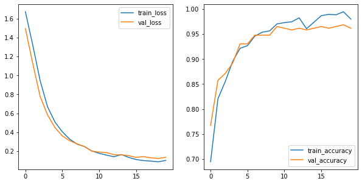
Adding L2 to multiple layers:
model = Sequential()
model.add(Dense(30, activation='relu',
input_dim=64))
model.add(Dense(20, activation='relu',
kernel_regularizer=l2(l2=0.01)))
model.add(Dense(12, activation='relu',
kernel_regularizer=l2(l2=0.01)))
model.add(Dense(12, activation='relu',
kernel_regularizer=l2(l2=0.01)))
model.add(Dense(12, activation='relu',
kernel_regularizer=l2(l2=0.01)))
model.add(Dense(8, activation='relu',
kernel_regularizer=l2(l2=0.01)))
model.add(Dense(4, activation='relu',
kernel_regularizer=l2(l2=0.01)))
model.add(Dense(1, activation='sigmoid'))
model.compile(optimizer='adam',
loss='binary_crossentropy',
metrics=['accuracy'])
results = model.fit(X_pure_train, y_pure_train, epochs=20, batch_size=32,
verbose=0, validation_data=(X_val, y_val))
train_loss = results.history['loss']
train_acc = results.history['accuracy']
val_loss = results.history['val_loss']
val_acc = results.history['val_accuracy']
fig, (ax1, ax2) = plt.subplots(1, 2, figsize=(10, 5))
sns.lineplot(results.epoch, train_loss, ax=ax1, label='train_loss')
sns.lineplot(results.epoch, train_acc, ax=ax2, label='train_accuracy')
sns.lineplot(results.epoch, val_loss, ax=ax1, label='val_loss')
sns.lineplot(results.epoch, val_acc, ax=ax2, label='val_accuracy');
/opt/anaconda3/envs/learn-env-new/lib/python3.8/site-packages/seaborn/_decorators.py:36: FutureWarning: Pass the following variables as keyword args: x, y. From version 0.12, the only valid positional argument will be `data`, and passing other arguments without an explicit keyword will result in an error or misinterpretation.
warnings.warn(
/opt/anaconda3/envs/learn-env-new/lib/python3.8/site-packages/seaborn/_decorators.py:36: FutureWarning: Pass the following variables as keyword args: x, y. From version 0.12, the only valid positional argument will be `data`, and passing other arguments without an explicit keyword will result in an error or misinterpretation.
warnings.warn(
/opt/anaconda3/envs/learn-env-new/lib/python3.8/site-packages/seaborn/_decorators.py:36: FutureWarning: Pass the following variables as keyword args: x, y. From version 0.12, the only valid positional argument will be `data`, and passing other arguments without an explicit keyword will result in an error or misinterpretation.
warnings.warn(
/opt/anaconda3/envs/learn-env-new/lib/python3.8/site-packages/seaborn/_decorators.py:36: FutureWarning: Pass the following variables as keyword args: x, y. From version 0.12, the only valid positional argument will be `data`, and passing other arguments without an explicit keyword will result in an error or misinterpretation.
warnings.warn(
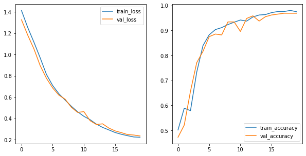
Adding more epochs:
model.compile(optimizer='adam',
loss='binary_crossentropy',
metrics=['accuracy'])
results = model.fit(X_pure_train, y_pure_train, epochs=50, batch_size=32,
verbose=0, validation_data=(X_val, y_val))
train_loss = results.history['loss']
train_acc = results.history['accuracy']
val_loss = results.history['val_loss']
val_acc = results.history['val_accuracy']
fig, (ax1, ax2) = plt.subplots(1, 2, figsize=(10, 5))
sns.lineplot(results.epoch, train_loss, ax=ax1, label='train_loss')
sns.lineplot(results.epoch, train_acc, ax=ax2, label='train_accuracy')
sns.lineplot(results.epoch, val_loss, ax=ax1, label='val_loss')
sns.lineplot(results.epoch, val_acc, ax=ax2, label='val_accuracy');
/opt/anaconda3/envs/learn-env-new/lib/python3.8/site-packages/seaborn/_decorators.py:36: FutureWarning: Pass the following variables as keyword args: x, y. From version 0.12, the only valid positional argument will be `data`, and passing other arguments without an explicit keyword will result in an error or misinterpretation.
warnings.warn(
/opt/anaconda3/envs/learn-env-new/lib/python3.8/site-packages/seaborn/_decorators.py:36: FutureWarning: Pass the following variables as keyword args: x, y. From version 0.12, the only valid positional argument will be `data`, and passing other arguments without an explicit keyword will result in an error or misinterpretation.
warnings.warn(
/opt/anaconda3/envs/learn-env-new/lib/python3.8/site-packages/seaborn/_decorators.py:36: FutureWarning: Pass the following variables as keyword args: x, y. From version 0.12, the only valid positional argument will be `data`, and passing other arguments without an explicit keyword will result in an error or misinterpretation.
warnings.warn(
/opt/anaconda3/envs/learn-env-new/lib/python3.8/site-packages/seaborn/_decorators.py:36: FutureWarning: Pass the following variables as keyword args: x, y. From version 0.12, the only valid positional argument will be `data`, and passing other arguments without an explicit keyword will result in an error or misinterpretation.
warnings.warn(
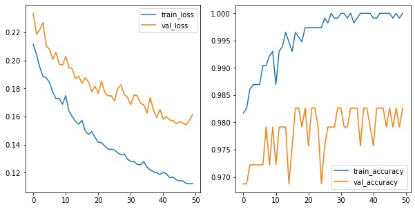
Dropout#
We can also specify a dropout layer in keras, which randomly shuts off different nodes during training.
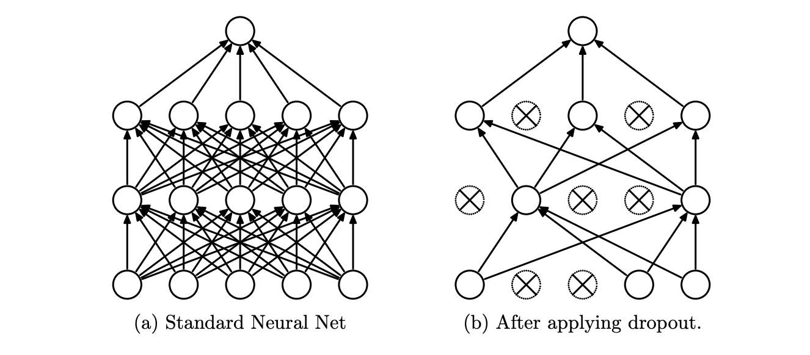
model = Sequential()
model.add(Dense(30, activation='relu', input_dim=64))
model.add(Dense(20, activation='relu'))
# This will apply to the previous layer
model.add(Dropout(0.5))
model.add(Dense(12, activation='relu'))
model.add(Dense(12, activation='relu'))
model.add(Dense(12, activation='relu'))
model.add(Dense(8, activation='relu'))
model.add(Dense(4, activation='relu'))
model.add(Dense(1, activation ='sigmoid'))
model.compile(optimizer='adam',
loss='binary_crossentropy',
metrics=['accuracy'])
results = model.fit(X_pure_train, y_pure_train, epochs=50,
batch_size= 32, verbose=0,
validation_data=(X_val, y_val))
train_loss = results.history['loss']
train_acc = results.history['accuracy']
val_loss = results.history['val_loss']
val_acc = results.history['val_accuracy']
fig, (ax1, ax2) = plt.subplots(1, 2, figsize=(10, 5))
sns.lineplot(results.epoch, train_loss, ax=ax1, label='train_loss')
sns.lineplot(results.epoch, train_acc, ax=ax2, label='train_accuracy')
sns.lineplot(results.epoch, val_loss, ax=ax1, label='val_loss')
sns.lineplot(results.epoch, val_acc, ax=ax2, label='val_accuracy');
Early Stopping#
We can also tell our neural network to stop once it stops realizing any gain.
This is the model with no regularization:
model = Sequential()
model.add(Dense(30, activation='relu', input_dim=64))
model.add(Dense(20, activation='relu'))
model.add(Dense(12, activation='relu'))
model.add(Dense(12, activation='relu'))
model.add(Dense(12, activation='relu'))
model.add(Dense(8, activation='relu'))
model.add(Dense(4, activation='relu'))
model.add(Dense(1, activation ='sigmoid'))
model.compile(optimizer='adam',
loss='binary_crossentropy',
metrics=['accuracy'])
results = model.fit(X_pure_train, y_pure_train, epochs=20,
batch_size=32, verbose=0, validation_data=(X_val, y_val))
train_loss = results.history['loss']
train_acc = results.history['accuracy']
val_loss = results.history['val_loss']
val_acc = results.history['val_accuracy']
fig, (ax1, ax2) = plt.subplots(1, 2, figsize=(10, 5))
sns.lineplot(results.epoch, train_loss, ax=ax1, label='train_loss')
sns.lineplot(results.epoch, train_acc, ax=ax2, label='train_accuracy')
sns.lineplot(results.epoch, val_loss, ax=ax1, label='val_loss')
sns.lineplot(results.epoch, val_acc, ax=ax2, label='val_accuracy');
Here we tell it to stop once the a very small positive change in the validation loss occurs:
model = Sequential()
model.add(Dense(30, activation='relu', input_dim=64))
model.add(Dense(20, activation='relu'))
model.add(Dropout(0.5))
model.add(Dense(12, activation='relu'))
model.add(Dense(12, activation='relu'))
model.add(Dense(12, activation='relu'))
model.add(Dense(8, activation='relu'))
model.add(Dense(4, activation='relu'))
model.add(Dense(1, activation ='sigmoid'))
model.compile(optimizer='adam',
loss='binary_crossentropy',
metrics=['accuracy'])
# Define the EarlyStopping object
early_stop = EarlyStopping(monitor='val_loss', min_delta=1e-8,
patience=0, verbose=1,
mode='min')
# Place this in a list as the value of the `callbacks` parameter
# in the `.fit()` method.
results = model.fit(X_pure_train, y_pure_train,
epochs=20, batch_size=32,
verbose=0, validation_data=(X_val, y_val),
callbacks=[early_stop])
train_loss = results.history['loss']
train_acc = results.history['accuracy']
val_loss = results.history['val_loss']
val_acc = results.history['val_accuracy']
fig, (ax1, ax2) = plt.subplots(1, 2, figsize=(10, 5))
sns.lineplot(results.epoch, train_loss, ax=ax1, label='train_loss')
sns.lineplot(results.epoch, train_acc, ax=ax2, label='train_accuracy')
sns.lineplot(results.epoch, val_loss, ax=ax1, label='val_loss')
sns.lineplot(results.epoch, val_acc, ax=ax2, label='val_accuracy');
That probably stopped too early. We can specify the number of epochs in which it doesn’t see decrease in the loss with the patience parameter.
model = Sequential()
model.add(Dense(30, activation='relu', input_dim=64))
model.add(Dense(20, activation='relu'))
model.add(Dropout(0.5))
model.add(Dense(12, activation='relu'))
model.add(Dense(12, activation='relu'))
model.add(Dense(12, activation='relu'))
model.add(Dense(8, activation='relu'))
model.add(Dense(4, activation='relu'))
model.add(Dense(1, activation ='sigmoid'))
model.compile(optimizer='adam',
loss='binary_crossentropy',
metrics=['accuracy'])
# Define the EarlyStopping object
early_stop = EarlyStopping(monitor='val_loss', min_delta=1e-8,
patience=5, verbose=1,
mode='min')
# Place this in a list as the value of the `callbacks` parameter
# in the `.fit()` method.
results = model.fit(X_pure_train, y_pure_train,
epochs=50, batch_size= 32,
verbose=0, validation_data=(X_val, y_val),
callbacks=[early_stop])
train_loss = results.history['loss']
train_acc = results.history['accuracy']
val_loss = results.history['val_loss']
val_acc = results.history['val_accuracy']
fig, (ax1, ax2) = plt.subplots(1, 2, figsize=(10, 5))
sns.lineplot(results.epoch, train_loss, ax=ax1, label='train_loss')
sns.lineplot(results.epoch, train_acc, ax=ax2, label='train_accuracy')
sns.lineplot(results.epoch, val_loss, ax=ax1, label='val_loss')
sns.lineplot(results.epoch, val_acc, ax=ax2, label='val_accuracy');
Multiclass Classification and Softmax#
Now let’s return to the problem of predicting digits 0 through 9.
digits = load_digits()
X = digits.data
y = digits.target
X_train, X_test, y_train, y_test = train_test_split(X, y,
random_state=42,
test_size=0.2)
X_pure_train, X_val, y_pure_train, y_val =\
train_test_split(X_train, y_train,
random_state=42, test_size=0.2)
X_pure_train, X_val, X_test = X_pure_train/16, X_val/16, X_test/16
For a multiclass output, our neural net expects our target to be in a certain form.
ohe = OneHotEncoder(sparse=False)
y_pure_train = ohe.fit_transform(y_pure_train.reshape(-1,1))
y_val = ohe.transform(y_val.reshape(-1,1))
y_test = ohe.transform(y_test.reshape(-1,1))
y_test
# Model from above:
model = Sequential()
model.add(Dense(12, activation='relu', input_dim=64))
model.add(Dense(8, activation='relu'))
model.add(Dense(10, activation='softmax'))
model.compile(optimizer='adam',
loss='categorical_crossentropy',
metrics=['accuracy'])
results = model.fit(X_pure_train, y_pure_train,
epochs=50, batch_size=10,
validation_data=(X_val, y_val))
The sofmax function outputs a number between 0 and 1 for each of our classes. All of the probabilities of the classes sum up to 1.
The number of nodes in our output layer equals the number of categories in our dataset.
We also need a new loss function: categorical crossentropy, which calculates a separate loss for each label and then sums the results.
history = results.history
training_loss = history['loss']
val_loss = history['val_loss']
training_accuracy = history['accuracy']
val_accuracy = history['val_accuracy']
fig, (ax1,ax2) = plt.subplots(1,2,figsize=(15,5))
sns.lineplot(list(range(len(training_loss))),
training_loss, color='r', label='training', ax=ax1)
sns.lineplot(list(range(len(val_loss))),
val_loss, color='b', label='validation', ax=ax1)
sns.lineplot(list(range(len(training_loss))),
training_accuracy, color='r', label='training',ax=ax2)
sns.lineplot(list(range(len(val_loss))),
val_accuracy, color='b', label='validation',ax=ax2)
ax1.legend();
y_hat_test = np.argmax(model.predict(X_test), axis=-1)
y_test_restore = ohe.inverse_transform(y_test)
confusion_matrix(y_test_restore, y_hat_test)
Wow, look at that performance!
That is great, but remember, we were dealing with simple black and white images. With color, our basic neural net will have less success.
We will explore more advanced tools in the coming days.
Appendix: More on Tensorflow Vs. Keras#
Let’s start with tensors#
Tensors are multidimensional matrices.
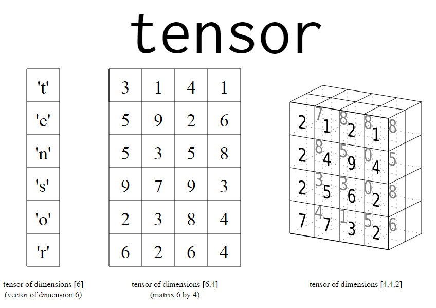
TensorFlow manages the flow of matrix math#
That makes neural network processing possible.
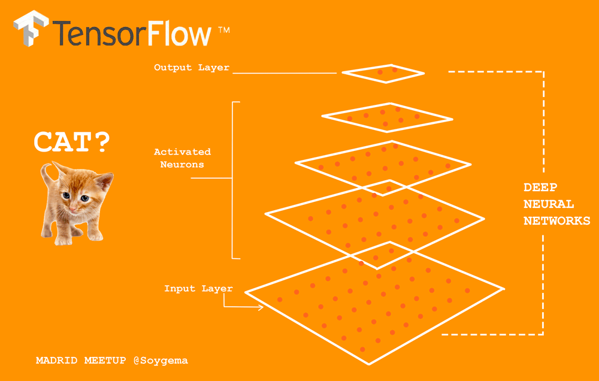
For our numbers dataset, our tensors from the sklearn dataset were originally tensors of the shape 8x8, i.e. 64-bit pictures. Remember, that was with black and white images.
For image processing, we are often dealing with color.
image = load_sample_images()['images'][0]
imgplot = plt.imshow(image)
image.shape
What do the dimensions of our image above represent?
Tensors with higher numbers of dimensions have a higher rank.
A matrix with rows and columns only, like the black and white numbers, has rank 2.
A matrix with a third dimension, like the color pictures above, has rank 3.
When we flatten an image by stacking the rows in a column, we are decreasing the rank.
flat_image = image.reshape(-1, 1)
flat_image.shape
427*640*3